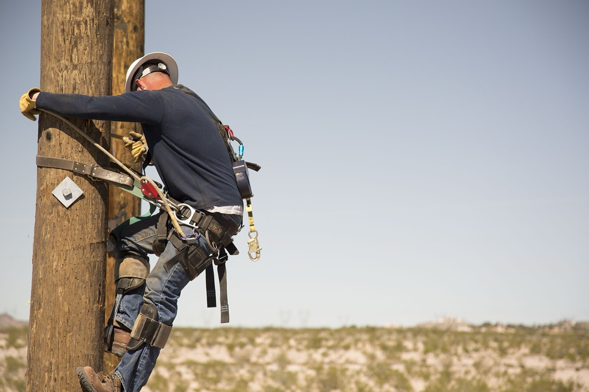

Built to Stay · A supplier and workforce readiness partnership for the Arkansas Cypress solar build
The Follow-Through on Arkansans Building Arkansas.
Getting Jefferson County firms, kitchens and workers from the vendor fair to a contract, and still working when the build is done.
For: Entergy Arkansas economic development and supplier engagementDiscussion draft · November 2026Read the Delta Futurism story →
01
Entergy Has Committed to Local First.
Entergy told the Arkansas Public Service Commission it will work with its contractor “to use local contractors and suppliers when possible.” Its own line is Arkansans building Arkansas. The question is how many Jefferson County firms are ready when the packages open.
$1.6Bapproved cost of Arkansas Cypress: 600 MW of solar and a 350 MW battery, in service December 2028
800workers on site at the peak of construction, by Entergy’s testimony; 10–15 permanent staff after
$46Min state sales and use tax expected during construction
$9.6Min property taxes expected in the plant’s first year of operation
All four from Entergy’s testimony as summarized in APSC Order No. 4, Docket 25-054-U (March 2026), and the Commission’s 2026 Generating Arkansas Jobs Act report.
100food-service and drinking establishments with paid staff in Jefferson County
64construction establishments, mostly small specialty trades; 4 in heavy and civil work
16trucking establishments; most have fewer than five employees
18.6%of residents in poverty, against 12.5% nationally; about 30% fewer people than in 1980
Census County Business Patterns 2023; American Community Survey 2020–2024, table B17001; 1980 census and 2025 population estimate.
The county’s firms are small, and nobody publishes how much of a build like this stays in the county.
02
From the Fair to a Contract.
A small county firm has five steps to clear between a vendor fair and an award. The pieces exist. What nobody owns is the follow-through between them, which is where small firms stall.
StepWhere small firms stallIn place todayWhat Built to Stay adds
1Register
Never finish the supplier registration after the fair.
Entergy’s supplier registration, open to Arkansas firms.
A workshop where firms register together, in the room.
2Prequalify
Insurance minimums, safety records, the Avetta safety prequalification for on-site work.
The requirements, set by Entergy and Wanzek.
A readiness record for each firm: what’s missing, the fix, the date.
3Find the package
Don’t know what work is open, or when.
Packages issued by Wanzek and its subcontractors.
A ready list matched to packages, and notice to ready firms the day one opens.
4Bid
First bid to a contractor this size.
Wanzek’s own process. Wanzek decides.
Help assembling the bid. No say in the decision.
5Build a record
One job, then nothing to show the next buyer.
Prime contractors report local spend quarterly under Entergy’s Second-Tier program.
A monthly count of firms registered, prequalified, bidding and awarded.
Selling a single catering job is one thing. Knowing how to clear a procurement process and become a vendor is what leaves a business stronger for the next plant.
03
What It’s Like to Work With Us.
One workshop to start, thirty minutes every two weeks, and a short list whenever a package opens. Here is what Entergy and Wanzek would see, step by step, with who does what at each one.
Built to Stay · Arkansas CypressIllustrative example
Working brief · BTS-001Rev 2 · Prepared by Delta Futurism
Arkansas Cypress: what the build needs in the next 90 days
At the table
Entergy economic development and supplier engagement; Wanzek procurement and site hiring; a training partner; one county business
Opening soon
Hauling and aggregate; erosion control and seeding; fencing; crew meals at the laydown yards; craft hires
Who decides
Wanzek buys and hires. The working group picks pilots and can stop any of them.
Cadence
30 minutes every two weeks; a count every month
Corrected by partners
Example
Workshop notes · BTS-004Pine Bluff · Prepared by Delta Futurism
Getting on the list: supplier registration, safety and insurance
Trade
Firms
Registered in the room
Need help with
Food service
9
7
Liability limits, health permit
Hauling
6
5
Safety record, auto coverage
Site services
5
4
Avetta, written safety program
Professional
3
3
None
Agenda: how Entergy and Wanzek buy; registration; safety prequalification; insurance; what’s opening.
23 firms attended
Example
Readiness record · Hauler BUpdated week 4 · Prepared by Delta Futurism
Hauler B: gravel and aggregate
Requirement
Status
Fix
By
Supplier registration
Done
—
—
General liability and auto
Meets
—
—
Safety record
Gap
Written safety program and plan filed
Week 6
Avetta prequalification
Started
Upload safety program
Week 7
References
2 similar jobs
—
—
Requirements shown are typical; the real list comes from Entergy and Wanzek.
Closing the gap
Example
Ready list · Jefferson County4 of 23 shown · Prepared by Delta Futurism
Firms and residents ready before the packages open
Firm or cohort
Work
Registered
Avetta
Status
Kitchen A
Crew meals
Yes
n/a
Ready
Hauler B
Gravel, hauling
Yes
Started
Closing a gap
Fence Co. C
Perimeter fencing
Yes
Done
Ready
Craft cohort, 12
Laborers
n/a
n/a
OSHA-10 done
23 checked
Example
Package notice · BTS-017Sent the day it opened · Prepared by Delta Futurism
Perimeter fencing, Area 3 · bids due in 14 days
Fence Co. C · registered, Avetta done · 2 similar jobs
Fence Co. D · registered, Avetta done · bonded
Hauler B · can bid the gravel portion
Three county firms are ready to bid through your process. No recommendation and no guarantee: the choice is yours.
Sent day one
Example
Monthly count · month 6Reviewed by partners before release
What moved this month
31firms registered
19prequalified for on-site work
11bids submitted
4awards
Laid out to match the Second-Tier spend reports prime contractors already file with Entergy.
Partner-reviewed
Example figures
Handoff · end of 2028Prepared by Delta Futurism
What carries forward, and to whom
The ready list goes to Entergy’s supplier team for the next build in the region.
The workers who trained on the build move to the next crew, and some to the plant’s permanent jobs.
The kitchens and haulers keep a record that wins their next contract.
The method is written down for other Delta counties hosting new infrastructure.
Handed over
Example
Step 1 of 7Example only. Firm names and numbers are made up; the real requirements come from Entergy and Wanzek.
One workshop to start. Thirty minutes every two weeks. The county is ready before the package opens.
The five workstreams

A
Energy Workforce
Start with
County residents placed with Wanzek or its subcontractors, through registered apprenticeship where it’s offered.
Builds on
Entergy’s HBCU commitment, which includes the University of Arkansas at Pine Bluff.
B
Crew Meals
Start with
A meal program at the laydown yards, supplied by county kitchens.
Hauling, materials, site services and professional firms, registered and prequalified before the packages open.
Counted in
The Second-Tier reports prime contractors already file.
D
Landowner Prosperity
Start with
A voluntary program for landowning families: planning, education and independent advisers.
To answer together
How many families want it, and which topics.
E
Community Resilience
Start with
Map the clinics, shelters and churches without backup power.
To answer together
Who owns and runs each project; who funds it.
04
The Crew Meal Program.
Not a food truck at the gate. A program that brings fresh, simple meals to the crews where they work, so nobody drives off site at midday, and that lets the county’s own kitchens supply it.
How it runs
One kitchen. A mobile commercial kitchen with an Arkansas Department of Health permit, set where Wanzek wants it.
Meals go to the crews. Fixed delivery windows to shaded tents or a dining trailer at each laydown yard. No trucks in the work zone, no lines.
Simple and fresh. One hot meal and a cold option, on a set menu.
County kitchens supply it. Local restaurants and caterers cook to the menu in their own licensed kitchens and deliver to the central kitchen. They never go on site.
Why it helps the build
Crews stay on site. At Meta’s Louisiana data center build, reporters found workers stopped leaving the grounds once a caterer fed them on site.
Less midday driving. Transportation incidents caused more than a third of construction-worker deaths in 2023.
Shade and water come with the meal, in line with OSHA’s heat guidance on rest breaks.
Many kitchens, not one. The work is spread across county businesses, so no single operator carries it.
The likely questionThe answer
Food on site means trucks, lines and people wandering.
One badged operator delivers inside the perimeter on a fixed window per crew. Crews stay where they are.
Who pays? It isn’t in our contract.
Wanzek provides space and power. Meals are priced at or under the federal meal allowance ($68 a day here), paid by workers, or by a sponsor during the pilot.
A bad meal takes out a crew, and we carry it.
One accountable operator with a health permit, licensed kitchens behind it, temperature logs, and insurance naming Wanzek.
The pilot: one laydown yard for 30 days. One number to judge it by: how many workers are back on site after lunch, before and after.
Size it yourself
Every input is our assumption, to confirm with Wanzek: how many eat, the price, and how long the peak runs. A month is about 21.7 working days. Entergy expects up to 800 workers on site at the peak.
Meals a dayMeals soldCooked by county kitchens
The pilot is a month of steady orders for a few county kitchens. The full program is most of a year of them, and a record that wins the next contract.
05
What Jefferson County Keeps.
The Delta Futurism story asks what stays when the money arrives. For one build, the answer comes in two parts: what the county earns while it’s being built, and what the county can do once the crews leave.
During the build: what it’s worth
$6–9.6Min wages to county residents: 100 placed on the build, at Entergy’s reported $5,000–$8,000 a month, for about a year each
$16Mto county firms for every 1% of the $1.6 billion build they win. We’ll set the target once Wanzek’s packages are known.
$0.6Min crew meals cooked by county kitchens if the program runs at every yard through the peak; about $14K for the 30-day pilot
$46Min sales and use tax during construction and $9.6 million in property tax in the first year, by Entergy’s own estimate. These come regardless; the rest depends on readiness.
Wages: our target of 100 residents × Entergy’s pay range in the 2026 Generating Arkansas Jobs Act report × 12 months. Contracts: 1% of the $1.6 billion approved cost. Meals: the model in section 04, at every yard (750 workers, 60% eating, $14, about nine months) with half the cooking by county kitchens. Taxes: APSC Order No. 4. Our figures are estimates; Entergy’s are Entergy’s.
After the build: what the county can do
1
Workforce
100
residents with a credential and a construction record: ready for the plant’s 10–15 permanent jobs, Jefferson Power Station and the next build.
2
Food and hospitality
3–5
county kitchens with a health permit, insurance and a contract record, able to bid for schools, hospitals and the next plant.
3
Local suppliers
25–40
firms registered and prequalified, with 15–25 contracts behind them, already on the list when the next Entergy build opens.
4
Land and family prosperity
20+
landowning families with a written plan for what their land earns. The decisions stay with the families.
5
Community resilience
3–5
clinics, shelters or churches funded for backup power, so care and shelter stay open through the next storm.
Counts are our targets, built from Entergy’s job figures and the county business counts in section 01. They are a starting point to agree with Entergy and Wanzek, not commitments.
Contracts decide who gets paid. Capabilities decide what stays.
This adds no work to anyone’s table. The partnership does the legwork in between, and every decision stays where it is today.
Owner and utility
Entergy Arkansas
Keeps doing
Owning the plant; registering suppliers; the Second-Tier program.
We take off the plate
Getting county firms ready, and counting what stayed.
Gains
“Arkansans building Arkansas,” counted in the Second-Tier numbers it already collects.
Construction
Wanzek
Keeps doing
Every hiring and buying decision.
We take off the plate
A short list of county firms and residents already checked against its requirements.
Gains
Subcontractors ready before the packages open, local hires without a recruiting drive, and crews on site at lunch.
Training
Colleges and the workforce center
Keeps doing
Their programs and standards.
We take off the plate
Matching trainees to real openings on the build.
Gains
Placements at the end of training, and a pipeline into the plant’s permanent jobs.
Businesses
County firms
Keeps doing
Their own work, bids and prices.
We take off the plate
Knowing what’s open, and closing the gaps to bid.
Gains
Contracts, and a record that wins the next one.
Land
Landowning families
Keeps doing
Every decision about their land and income.
We take off the plate
Finding planning help and independent advice.
Gains
A plan for what their land earns over the next 30 years.
Coordination
Delta Futurism
Does
The workshops, the readiness records, the ready list and the monthly count.
Never takes
A decision that belongs to someone else.
A working group decides. Entergy, the contractor, a training partner and a local business pick pilots and can stop any of them.
No vouching. The partnership readies firms. It never guarantees, insures or contracts for them.
Consent first. Records are kept only with consent and never sold; reports show totals.
Conflicts. The family’s restaurant may bid like any county firm. Family members step out of choosing or assessing it.
No lease terms. Nothing here touches any lease, payment or project term.
07
Measured Every Month.
A build is usually counted by what it announces. This counts what stayed, in the format Entergy already uses.
Counted todayJobs announced: 700–800 for the build, 10–15 permanent
Count alsoCounty residents placed, and still in the trade a year later
Not tracked by county today.
Counted todayLocal spend, reported quarterly by prime contractors
Count alsoJefferson County firms registered, prequalified, bidding and awarded
Not publicly reported by county.
Counted todayVendor fair attendance: about 340 company representatives
Count alsoFair attendees who went on to win work
New. Starts at zero.
Counted todayPlant completed: December 2028
Count alsoCounty firms with a repeat contract within two years
New. Starts at zero.
Where someone owned it
41%local workforce on the Gordie Howe International Bridge, against a 20% goal, with a named community-benefits team responsible for it
6 monthsLouisiana’s state-run Accelerator makes local suppliers ready to bid on megaprojects like Meta’s and Hyundai’s
160+Louisiana firms won $875M in the first year of Meta’s Richland Parish build, 84% of them from Northeast Louisiana (Meta’s figures)
340company representatives at Entergy’s March 2026 Arkansas vendor fairs. What happened next isn’t published yet.
08
Keyed to the Build.
It starts with what the project needs now, and grows only where partners see value. Timing follows the public construction schedule and will change.
NowConstruction under way · 2026
1 · Discover
Before civil work starts
Meet Entergy’s supplier and economic development teams and the contractor. Confirm what’s opening. Run the first vendor workshop.
What remainsA ready list and readiness records
Civil work · 2027
2 · Pilot
From civil work
The meal program at one laydown yard; the first packages matched to ready firms. Measures agreed first.
What remainsCounty firms with a first award
Peak construction · 2027–28
3 · Grow
Peak construction
Meals at every yard; more trades; the workforce and landowner programs. Public and philanthropic partners for resilience.
What remainsResidents still in the trade; families with a plan
In service · December 2028
4 · Hand off
At operation
The list to Entergy’s next build; the method written down for other Delta counties.
What remainsFirms with a record that wins the next contract
09
Three Small Asks to Start.
No money, no set-asides, no change to anyone’s process.
A working session with Entergy’s economic development and supplier engagement teams, to see where this fits with what Entergy already runs for local suppliers.
An introduction to Wanzek’s procurement and site-hiring leads for Arkansas Cypress.
A place at Entergy’s next vendor fair for the region, to run the readiness workshop for the firms who attend.
The immediate goal is modest. The ambition is that the Delta prospers alongside the infrastructure it hosts.
Who’s proposing this
We’re the Monson family. Our family holds land in the Arkansas Cypress project in Jefferson County. My mother, Reneta Harper, worked 30 years at Entergy Arkansas and retired from there. We know the company, and we know the place.
Delta Futurism is how we’re putting that to work, with Facework, my firm, running the day-to-day. I’m Stedmon Harper, and I would coordinate the first phase. How the work is supported is something to set together, not asked for up front. We don’t speak for other landowners or the wider community. We’re asking to be useful while the build is here.